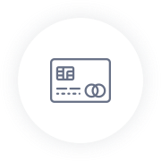

Выбери сумму и срок
Зарегистрируйся
Получи деньги на карту
IBOX

Личный кабинет
Касса банка
Оплата части кредита
При оплате части кредита Ваш кредитный договор будет продлен на базовый срок договора (срок кредита, который Вы выбрали при оформлении заявки на кредит). С условиями пролонгации Вы можете ознакомиться в личном кабинете.
оплата комиссии
При оплате комиссии за пролонгацию Ваш кредитный договор будет продлен на срок до 15 дней. Обратите внимание, что сумма, внесенная при продлении кредита, не погашает основную задолженность. С условиями пролонгации вы можете ознакомиться в личном кабинете.
Для постоянных клиентов максимальный срок кредита может быть увеличен до 3-х месяцев. При первом ... Далее
Пример расчета процентной ставки: при первом оформлении кредита онлайн в 1000 грн на 7 дней сумм ... Далее
В случае нарушения клиентом сроков оплаты займа и невыполнения своих обязательств по договору, об этом ... Далее
Сразу хотим сказать о том, чтобы вы забыли о длинных очередях, угрозы коллекторов и вымогательство. Мы такого не практикуем! Для того чтобы получить кредит онлайн на карту вам не придется возиться с документами и тратить на это много времени. Мы разрушаем стереотипы, поэтому работа с нами основывается на следующих принципах:
Итак, неважно, день или ночь, вы заходите на наш сайт и выполняете простые действия:
CashUp - это удобный сервис, который предоставляет возможность получить кредит онлайн на банковскую карту всего за несколько минут! Мы готовы протянуть руку помощи 24 часа в сутки и 7 дней в неделю, без выходных и праздников! CashUp доверяет своим клиентам, поэтому не создает препятствия для получения необходимой суммы. Наша философия: прозрачный бизнес, скорость выполнения запросов, лояльность к клиентам. Мы даем вам право самостоятельно выбрать день погашения кредита.
Мы не стоим на месте и постоянно совершенствуем нашу систему выдачи кредитов! Получили отказ? Не беда, обратитесь к нам, и мы сделаем все возможное для того, чтобы помочь вам! Весь процесс займет не более пяти минут. Пройдите все этапы и деньги автоматически будут зачислены на вашу карту. Решили взять кредит онлайн? Тогда выбирайте ответственного исполнителя, выбирайте CashUp!
Мы понимаем, что жизненные ситуации бывают разные, поэтому не возьмем с вас больше, чем вы сами решили взять! Мы ведем прозрачную политику, так что с помощью онлайн калькулятора можно увидеть сумму погашения. Сервис будет рад, если вы сумеете погасить задолженность досрочно. Просто следите за состоянием финансов у себя в личном кабинете. У нас современная система защиты персональных данных каждого клиента, поэтому она не попадет в руки «посторонних третьих лиц».
Взять кредит онлайн на карту просто и легко вместе с CashUp! Мы поможем вам решить временные финансовые трудности в кратчайшие сроки! Для нас дорог каждый клиент, поэтому мы создали удобную и быструю систему расчета с вами. В то время, когда все банки закрывают двери, мы их открываем! Убедиться в этом легко, просто воспользуйтесь услугами нашего сервиса!
Вам срочно нужны быстрые деньги наличными или на банковскую карточку? В Украине Вас выручат онлайн сервисы по экспресс кредитования. Это выход во многих случаях: забыли вовремя оплатить интернет, мобильная связь, или коммунальные услуги. Иногда бывает, что моментально нужны средства на лечение, подарок, а может и на еду. Вот почему мы рассмотрим широко вопрос онлайн кредитов. Мы поговорим о том, что это такое, где их брать, в каких компаниях выдают, а также коснемся кредитные истории и справки с работы.
Онлайн кредит - это быстрая финансовая помощь. Еще их называют «деньги до зарплаты». Это небольшие деньги, которые клиент оформляет и получает через интернет наличными на пластиковую карту банка. Украинский не нужны справки о доходах, подписание договора на бумаге. Процедура упрощена до максимума. В Украине такую услугу предоставляют не так давно. Активно пользоваться ею начали несколько лет назад. Украинцы стали обращаться за ипотекой и другими крупными кредитами в банки, а за деньгами к зарплате в онлайн сервисы.
Воспользоваться услугами микрофинансовых организаций могут совершеннолетние граждане страны с хорошей кредитной историей. В некоторых МФО выдают средства только с 20, а то и с 21 года. Все потому, что у молодых людей нет стажа, стабильного дохода и кредитной истории. А это и есть главные критерии возврата денег. И действительно, по статистике только 20% заемщиков до 21 лет оплачивают долг вовремя.
На оформление средств идет до 15 минут (в зависимости от выбранного кредитора). Деньги выдают преимущественно на срок до 30 дней. Есть возможность активировать пролонгацию, то есть продолжить услугу, но заплатив комиссию. Говоря о процентах, то за удобство надо платить. В МФО процентная ставка достаточно высока - в среднем 1,5% в день.
Оформление онлайн займа происходит быстро и без справок о доходах. Максимально процедура может занять до 10 минут при первичном обращении. Все, что нужно клиенту для получения денег, так это wi-fi с банковской картой. Далее потребитель вносит информацию о себе в специальную анкету и эти данные о нем хранятся в базе. Наличие такого личного кабинета значительно ускоряет работу системы при повторном обращении за финансовой помощью.
Не стоит спешить при заполнении анкеты, потому что наделаете ошибок. Чтобы правильно все сделать и получить средства к зарплате сделайте следующие шаги.
Откройте в браузере официальную страницу сервиса. Найдите бланк заявки, чаще всего он находится на первой странице вместе с онлайн калькулятором (или выдает после внесения информации в него). Отвечайте на все вопросы в обязательных полях.
В онлайн-калькуляторе отмечайте желаемое количество денег и срок кредитования. Далее рассчитайте (рядом находится соответствующая кнопочка). Система течение нескольких секунд выводит окончательную сумму займа с процентами. Никаких скрытых накруток и процентов.
Далее Вам приходит подтверждение на электронную почту и личный кабинет. Вы все проверяете. Если есть какие-то ошибки сразу позвоните в колл-центр и сообщите оператору о Вашей проблеме. Это можно сделать через email.
Присылайте заявку. Клиенту сразу высылают соглашение и с этого момента можно пользоваться деньгами, которые перечислили на карточку.
На рынке онлайн кредитования все строго. Или не вернешь раз вовремя долг - испортить репутацию и кредитную историю. Очень важно своевременно погашать займы. Тем более, когда компания идет на многие уступки в смысле отсутствия санкций и коллекторов. Помните, что эти займы рассчитаны на решение кратковременных проблем, поэтому их используют в течение длительного периода.
Есть несколько способов вернуть деньги.
Оплата банковской картой. Для этого нужно зайти на сайт в личный кабинет и следовать указаниям. Терминал самообслуживания. Среди всех функций нужно выбрать категорию банковских операций, указать привязан к карте номер телефона, дальше внести деньги.
Касса любого банка. Зайдите в ближайшее отделение и укажите реквизиты компании. Не забудьте обозначить Ваши данные. Даже если у Вас возникли какие-либо вопросы, просто позвоните в сервис и Вам ответят на любой вопрос. Главное, чтобы Вы решили все сложности сразу и не затягивали с выплатой займа.
Огромное преимущество микрофинансовых организаций перед банками находимся в том, что сервисы, как CashUp, более «сговорчивы». Микрозаймов выдают в любой точке Украины без жестких требований. При первом обращении за займом клиенту задают до 25 вопросов (чаще меньше). Эти вопросы носят информационный характер. Кроме ФИО, даты рождения, также спросят адрес прописки и / или фактического проживания. Для успешного заполнения заявки еще понадобиться паспорт, ИИН, мобильный телефон (Вам вышлют подтверждение) и действующий email. И все! Забудьте о справках с работы, залога, поручительство. А что если Вы захочет